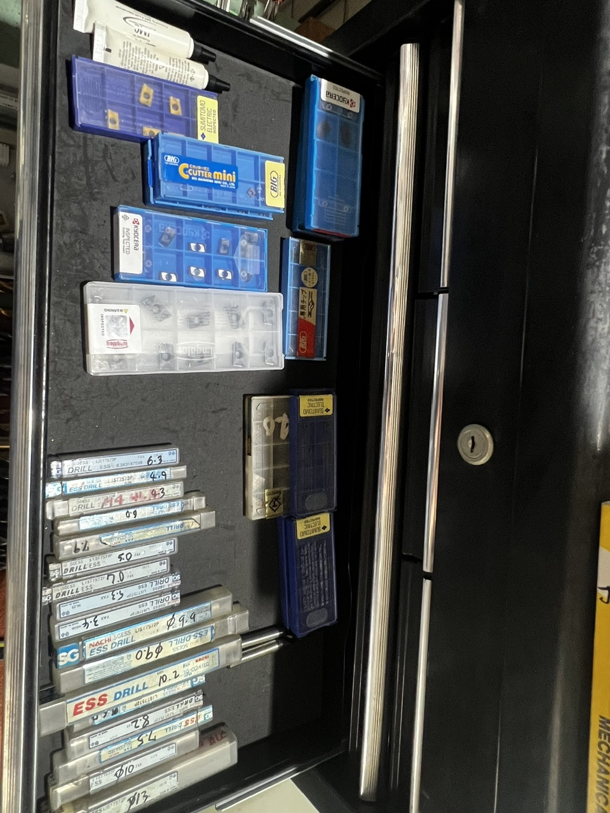
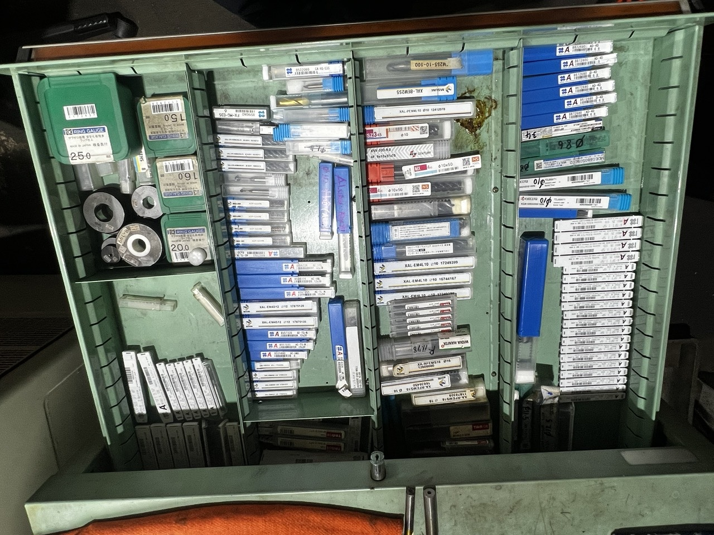
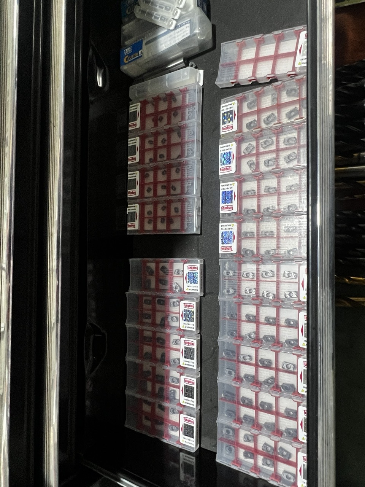
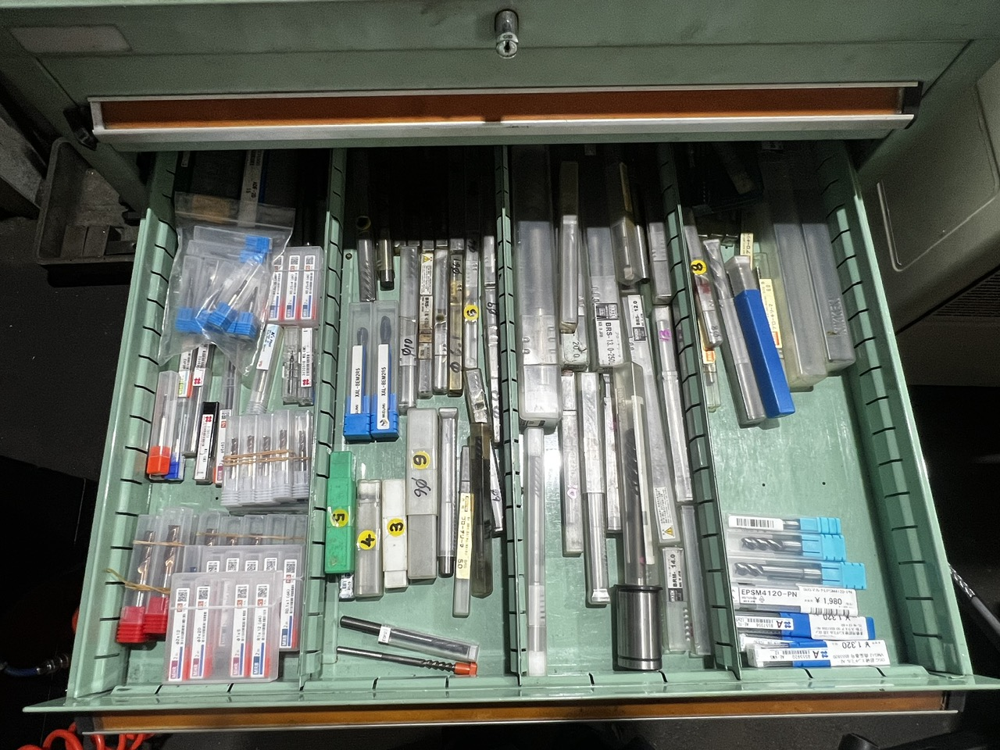
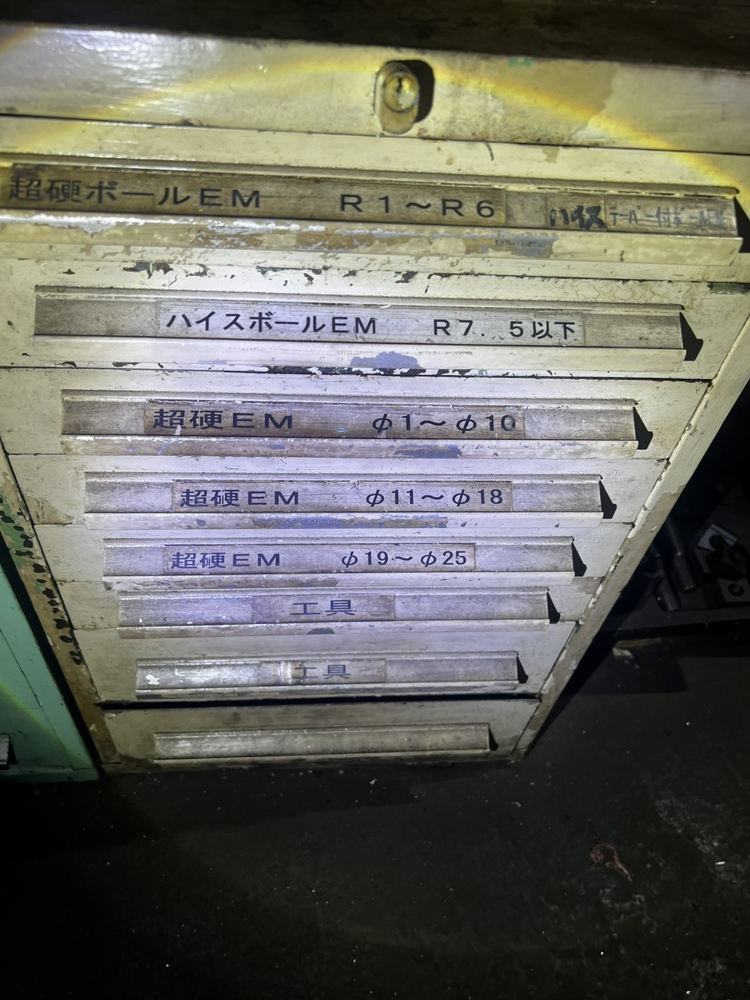
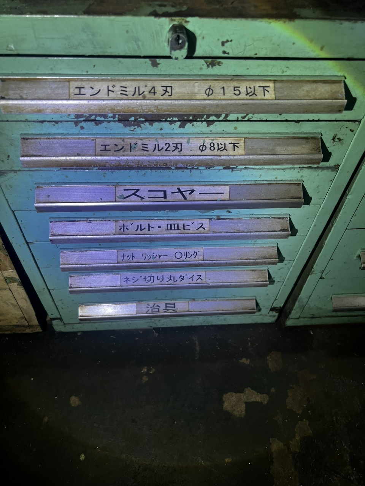
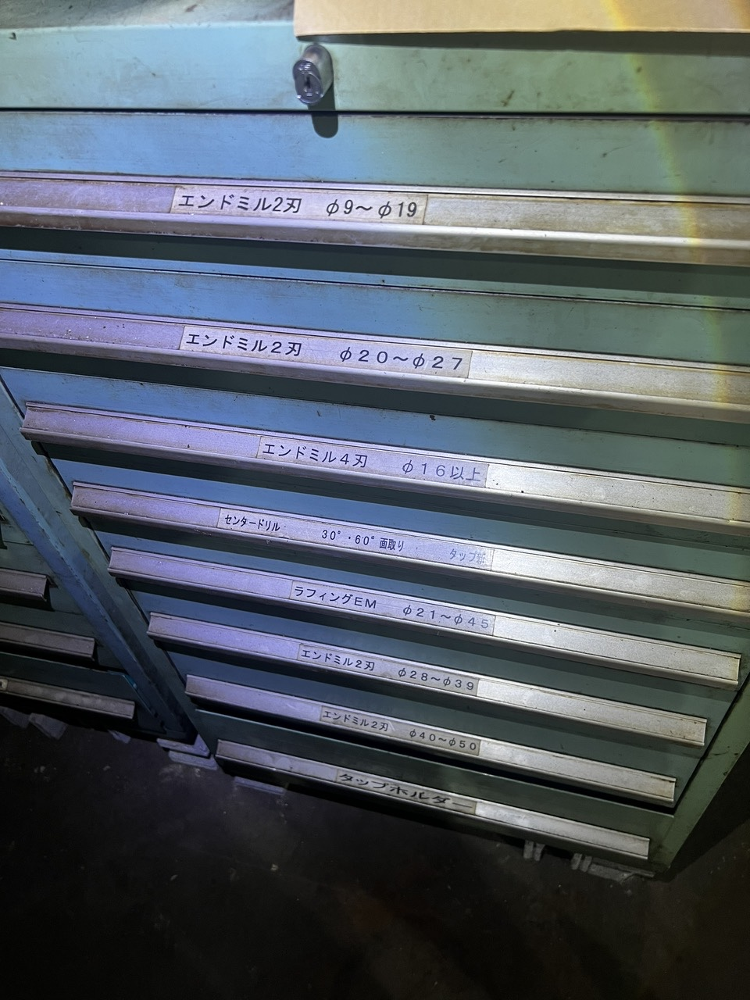
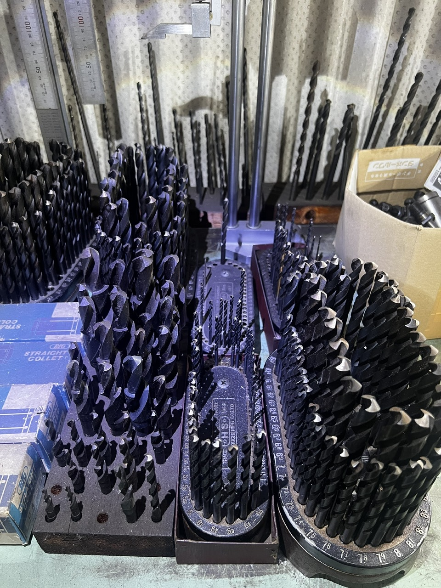

01 — CNC精密加工（自社工場）
マシニングセンタによる一貫加工
マシニングセンタと豊富な工具在庫による自社一貫加工。厳しい公差・面粗度のご要望に、多材質でお応えします。

立形マシニングセンタ
タップ・ねじ加工用工具
エンドミル・切削工具
加工済みアルミ部品01
立形マシニングセンタ
高速3軸制御による複雑形状の一貫加工。アルミ・樹脂・鉄・鋼・ステンレスに対応します。
02
タップ・ねじ加工用工具一式
多様なねじ規格に即対応できる工具管理体制を敷いています。
03
多彩なエンドミル・切削工具
材質・形状に応じた最適工具を選定し、仕上げの品位を高めます。
02 — 治具の設計・製作
設計からトライアウトまで一貫対応
治具用中ぐり盤による精密位置決めと、豊富な工具・計測具で仕上げます。

治具用中ぐり盤
精密コレット・工具セット 治具組立用工具
治具組立用工具 組立治具（完成品）
組立治具（完成品）01
治具用中ぐり盤
デジタルスケール付きで高精度な位置出しが可能です。
02
精密コレット・工具セット
治具部品の精密加工を支える工具群を常備しています。
03
治具組立用工具（スパナ類）
現場ですぐ使える工具を整然と管理しています。
Example
自動車組立治具・検査治具・溶接治具
自動車組立ライン向けの組立治具、迅速に検査できるチェッキング治具、溶接治具など。ポカヨケ指示の刻印、まぶしさを抑えるサンドブラスト仕上げ、自動クランプ機構の統合を特長とします。
03 — 溶接・重量物対応設備
パートナー網による重量物・構造対応
TIG溶接から重量物の構内搬送、材料切断まで。大型・重量物の案件にも対応します。
 TIG溶接機
TIG溶接機
重量物搬送 帯のこ盤（材料切断）
帯のこ盤（材料切断）
溶接構造（完成品）01
TIG溶接機
美しいビードを実現する精密TIG溶接が可能です。
02
フォークリフトによる重量物搬送
安全かつ効率的なハンドリング体制を整えています。
03
帯のこ盤（材料切断）
多様な材質・断面サイズに対応します。